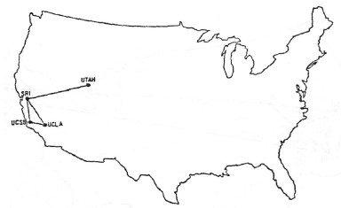
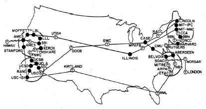
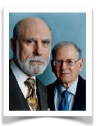
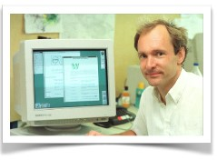
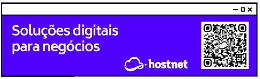
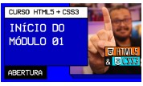

A Internet veio da Guerra (infelizmente)
Depois da Segunda Guerra Fria em 1949. Neste contexto, em que os dois blocos ideológicos e politicamente antagônicos exerciam enorme controle e influência no mundo, qualquer mecanismo, qualquer inovação, qualquer ferramenta nova poderia contribuir nessa disputa liderada pela União Soviética e pelos Estados Unidos: as duas superpotências compreendiam a eficácia e anecessidade absoluta dos meios de comunicação.
APRENDA MAIS: Quer aprender mais sobre a Guerra Fria? Dá uma olhada aqui nesse vídeo de 9 minutos e com certeza você vai entender mais sobre essa treta toda.
Canal Descomplica:https://youtu.be/cAwsLa04HGQ?t=49
Nessa perspectiva, o governo dos Estados Unidos temia um ataque russo às bases militares. Um ataque poderia trazer a público informações sigilosas, tornando os EUA vulneráveis.
Então foi idealizado um modelo de troca e compartilhamento de informações que permitisse a descentralização das mesmas. Assim, se o Pentágono fosse atingido, as informações armazenadas ali não estariam perdidas. Era preciso, portanto, criar uma rede, a ARPANET, criada pela DARPA, sigla para Defence Advanced Research Projects Agency.
O ataque inimigo nunca aconteceu, mas o que o Departamento de Defesa dos Estados Unidos não sabia era que dava início ao maior fenômeno midiático do século 20', único meio de comunicação que em apenas 4 anos conseguiria atingir cerca de 50 milhões de pessoas.
O começo de tudo
A ARPANET funcionava através de um sistema conhecido como chaveamento de pacotes, que é um sistema de transmissãi de dados em rede de computadores no qual as informações são divididas em pequenos pacotes, que por sua vez contém:
- trecho dos dados
- o endereço do destinatário
- informações que permitiam a remontagem da mensagem original.
Em 29 de Outubro de 1969 ocorreu a transmissão do que pode ser considerado o primeiro E-mail da história. O texto desse primeiro e-mail seria "LOGIN", conforme desejava o Professor Leonard Kleinrock da Universidade da Califórnia em Ls Angeles (UCLA), mas o computador no Stanford Research Institute, que recebia a mensagem, parou de funcionar após receber a letra "O".

A ARPANET no início, em 1969, só tinha 4 pontos
Já na década de 1970, a tensão entre URSS e EUA diminui. As duas potências entram definitivamente naquilo em que a história se encarregou de chamar de Coexistência Pacífica.
Não havendo mais a iminência de um ataque imediato, o governo dos EUA permitiu que pesquisadores que desenvolvessem, nas suas respectivas universidades, estudos na área de defesa pudessem também entrar na ARPANET
Com isso, a ARPANET começou a ter dificulades em administrar todo este sistema, devido ao grande e crescente número de localidades universitárias contidas nela. Dividiu-se então este sistema em dois grupos, a a MILNET, que possuía as localidades militares e a nova ARPANET, que possuía as localidades não militares. O desenvolvimento da rede, nesse ambiente mais livre, pode então acontecer. Não só os estudos já empreendidos e somaram esforços para aperfeiçoá-los.

Já na década de 70, depois da abertura da rede para pesquisadores
Além desses backbones, existem os criados por empresas particulares. A elas são conectada redes monores, de forma mais ou menos anárquica. É basicamente isto que consiste a Internet, que não tem um dono específico.
Com a entrada de muitos pontos na rede e com métodos de comunicação diferentes entre eles, alguma atitude tinha que ser tomada, já que o antigo protocolo NCP já não estava mais aguentando. Robert Khn da DARP e ARPANET recrutaram nesse problema. Em 1973, eles logo trabalharam com uma reformulação fundamental, onde as direnças entre os protocolos de rede eram escondidas pelo uso de um protocolo inter-redes comum, e, ao invés da rede ser a responsável pela confiabilidade, com no ARPANET, os hospedeiros ficaram como responsáveis.

A especificação do protocolo resultante contém o primeiro uso atestado do termo internete, como abreviação de internetworking; então a palavra começou com um adjetivo, ao invés do nome que é hoje. Com o papel da rede reduzida ao mínimo, ficou possível a junção de praticamente todas a redes, não importando suas características, assim, resolvendo o problema inicial de Kahn. O DARPA concordou em financiar o projeto de desenvolvimento do softeare, e depois de alguns anos de trabalho, a primeira demostração de algo sobre gateway entre a rede de Packet
Radio na Baía de SF área e a ARPANET foi conduzida. Decorrentes das primeiras especificações do TCP em 1974, TCP/IP emergiu em meados do final de 1978, em forma quase definitva. Em 1º de janeiro de 1983, data conhcida com Flag Day, o protocolo TCP/IP se tornou o único protocolo aprovado pela ARPANET, substituindo o antigo protocolo NCP.
O cientista Tim Berners-Lee (foto ao lado), do CERN, criou a World Wide Web, a liguagem HTML e o protocolo HTTP em 1992. Essa linguagem simples, mas eficiente, era usada para a criação dos sites com o cenceito de hipertexto ( documentos ligados entre si).
A empresa norte-americana Netscape criou o protocolo HTTPS (HyperText Transfer Protocol Secure), possibilitando o envio de dados criptografados para transações comerciais pela internet.

APRENDA MAIS: A História da Internet tem muitos outros acontecimentos enteressantes. Quer ver mais sobre isso? Então veja esse vídeo de 15 minutos que conta tudo com riqueza de detalhes, mas sem se tornar chato:
Canal TecMundo: https://youtu.be/pKxWPo73pX0?t=27
A Internet no Brasil
Em 1989, o Ministério da Ciência e Tecnologia lança um projeto pioneiro, a Rede Nacional de Ensino e Pesquisa (RNA). Existente ainda hoje, a RNP é uma organização de interesse público cuja principal missão é operar uma rede acadêmica de alcance nacional. Quando foi lançada, a organização tinha o objectivo de capacitar recurso humanos de alta tecnologia e difundir a tecnologia Internet através da implantação do primeiro badkbone nacional.
O primeiro backbone brasileiro foi inaugurado em 1991, destinado exclusivamente à comunidade acadêmica. Mais tarde, em 1995, o governo resolveu abrir o backbone e fornecer conectividade a provedores de acesso comerciais. A partir dessa decisão,

surgiu uma discussão sobre o papel da RNP como uma rede estritamente acadêmica comacesso livre para acadêmicos e taxada para todos dos outros consumidores. Com o crescimento da Internet comercial, a RNP voltou novamente a atenção para a cominidade cinetífica.
A partir de 1997, iniciou-se uma nova fase na Internet brasileira. O aumento de acessos a rede e a necessidade de uma infraestrutura mais veloz e segura levou a investimentos em novas tecnologias. Entretanto, devido a carência de uma infraestrutura de fibra óptica que cobrisse todo o território nacional, primeiramente, optou-se pela criação de redes locais de alta velocidade, aproveitando a estrutura de algumas regióes metropolitanas. Como parte desses investimentos, em 2000, foi implantado o backbone RNP2 com o objetivo de interligar todo o país em uma rede de alta tecnologia. Atualmente, o RNP2 concta os 27 estados brasileiros e interliga mais 300 instituições de ensino superior e de pesquisa no pa~is, com INMETRO e suas sedes regionais.
Outro avanço alcançado pela RNP ocorreu em 2002. Nesse ano, o então presidente da república transformou a RNP em uma organização social. Com isso ela passa a ter maior autonomia administrativa para executar a tarefas e o poder público ganha meios de controle mais eficazer par avaliar e cobrar os resulatadosl Como objetivos dessa transformação estão o fornecimento de serviços de infraestrutura de redes IP avançadas, a implantação e a avaliação de novas tecnologias de rede, a disseminação dessas tecnologias e a capacitação de recurso humanos na área de segurança de redes, gerência o roteamento.
A partir de 2005, a comunicação entre os point of presence (PoPs) da rede começou a ser ampliada com o uso de tecnologia óptica, o que elevou a capacidade de operação a 11Gbps. A vase instalada de computadores no Brasil atinge 40 milhões, de acordo com pesquisa da Escola de Administração de Empresas de São Paulo da Fundação Getúlio Vargas. O número, que inclui computadores em empresas e residências, representa um crescimento de 25% sobre a base registrada no mesmo período do ano passado.
APRENDA MAIS: Quer ver mais informações sobre a chegada da Internet aqui no Brasil? Aqui vai mais um vídeo interessante que vai te contar todos os detalhes.
Canal TecMundo: https://youtu.be/k_inQhpKprg?t=43
Quer acompanhar tudo em vídeo?
Eu seu que às vezes as pessoas gostam mais de assistir vídeos do que ler livros, e é por isso que lanço há anos materiais no canal Curso em Vídeo no Youtube. O link que vou compartilhar contigo faz parte da playlist completa onde você encontra o Módulo 1 do Curso de HTML5 e CSS3, completamente gravado com base nesse material.

Além de acessar o link a seguir, você também pode ter acesso às aulas apontando a câmera do seu celular para o código QR ao lado. Todo dispositivo smartphone ou tablet atualizado já possui esse recurso de leiruta de códigos habilitado por padrão.
Módulo 1 do curso: https://www.youtube.com/playlist?list=PLHz_AreHm4dkZ9 - atkcmcBaMZdmLHft8n